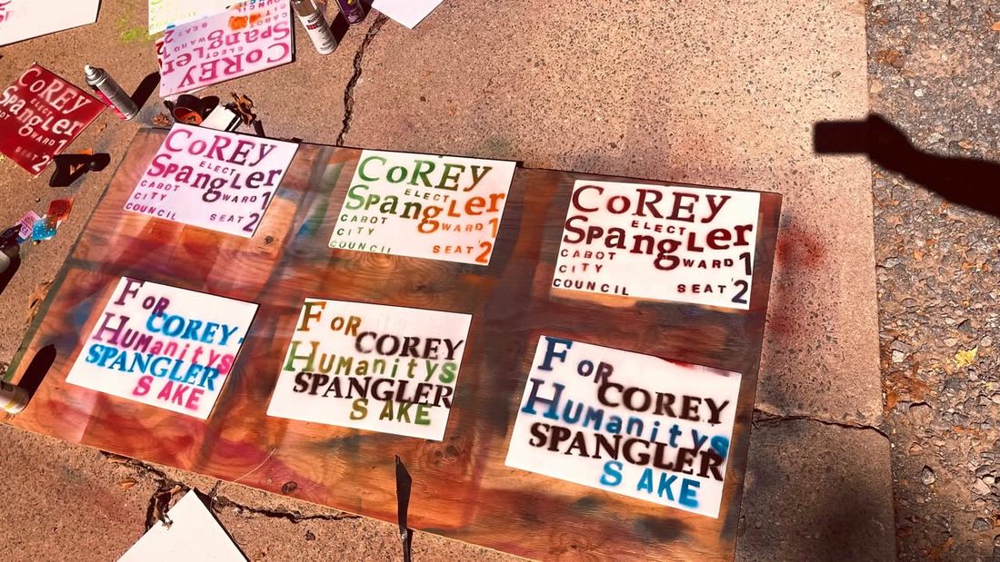

Synthesism as Praxis
A philosophy you can't watch somebody practice is just a poster. This page states mine briefly — then demonstrates it, five times, with real artifacts from the record.
The philosophy, briefly
My philosophy is called Dynamic Synthesism. Its core claims:
- Governance is an operational science, not a team sport. Define the problem, find the mechanism, measure the result.
- Efficacy over aesthetic. A policy is judged by whether it works, not by whether it matches an ideology's look.
- Synthesis over victory. Legislating means synthesizing competing ideas into something shared — the closest achievable consensus, not a squeaked-out vote to impose a worldview.
- The Living Ledger. Policies are kept or retired by results. No policy is sacred; every policy is audited against outcomes.
- Sophistry vs. Stewardship. I grade leaders — including myself — on that scale, not left to right. Sophistry is performance: resolutions that bind nothing, outrage for cameras. Stewardship is the record: binding rules passed, money accounted for, mechanisms that still work after the meeting ends.
- Radical agnosticism toward parties. Parties are machinery — infrastructure that can be occupied and used — not identities and not churches. I work inside the Democratic Party because that is the machinery in front of me; I am not a Democrat first, and my project, The Stoic Opposition, instructs people to take seats in both parties.
One sentence version: if it binds something, it's stewardship; if it only says something, it's sophistry — so I legislate in the form that binds. A resolution is a statement. An ordinance binds the spending. If I mean it, I pass it in a form that holds.
Worked example 1 — The cameras: mechanism over symbolism
Cabot's third-party license-plate reader cameras (the Flock system) were suspended in August 2026. Two ways to "do something" presented themselves:
- A resolution calling for the cameras to come down — a statement of position that binds nothing. I abstained from that voice resolution, on purpose.
- An ordinance cutting off the money. Ordinance No. 33 of 2026 prohibits the appropriation or expenditure of city funds for automated license plate reader systems provided by third parties. Existing contracts are honored to expiration; no renewals, no extensions, no expansions.
My position, stated exactly: first, undo the current third-party system. I am not for a first-party or city-run system as the plan or the sequel. Any in-house system would be a separate, later public decision — made in public, under public oversight, only if this community decides it wants one.
Where it stands: Ordinance 33 had its second reading on November 2, 2026. My motion to waive the third reading and pass it that night failed 4–4 — a waiver takes two-thirds of all members, 6 of 8, under Ark. Code § 14-55-202(a). The third reading is scheduled for November 16, 2026, where passage takes 5 of 8. It is not passed yet, and this page will say so until it is.
The method: the consensus was already there — camera opponents opposed the system outright, and many camera supporters distrusted a private, out-of-state company holding the data. Ending the third-party system was the point both sides could agree on, so that is what I legislated.
Worked example 2 — Conscience and AI: write it into law in advance
Ordinance No. 21 of 2026, which I wrote, was adopted unanimously on August 17, 2026. It amends the city's personnel policies so no city employee can be compelled, as a condition of employment, to use generative or agentic AI that conflicts with their sincerely held religious beliefs. The employee files a written First Amendment Technological Accommodation request with HR; the city provides another way to get the work done; performance and quality standards stay the same. Assistive technology — spellcheck, calculators, search — is explicitly not covered.
As far as anyone has been able to find, it is the first AI religious exemption law of its kind anywhere — a law, not a one-off accommodation. Other places handled this one employee at a time, after the fact. Cabot wrote the protection in advance. This is about conscience, not about opting out of doing the job.
The method: don't wait for the harm and litigate; find the mechanism — here, personnel policy — and bind it before the conflict arrives.
Worked example 3 — Ask before the vote: the agenda polls
Before every regular council meeting, I run a poll for residents on the substantive items on the agenda — one plain-language question per item, with the agenda itself published alongside — and I report the tallies after. Not a scientific survey, and I will never present it as one: it is an informal, self-selected read of the neighbors who showed up to answer, kept next to — never blended into — what I hear in the room and online.
First poll: opens Thursday, November 12, 2026, for the November 16, 2026 meeting. There are no results yet because the poll hasn't run. When it has, the numbers go on the Meetings & Your Voice page, labeled for exactly what they are.
The method: input is a mechanism too. Slow the vote down, publish the agenda, ask the question in plain English, then vote — in that order.
Worked example 4 — Clean money: a bylaw, not a press release
On January 23, 2026, the Democratic Party of Lonoke County adopted §601.4, "Campaign Finance Limitations," into its bylaws, unanimously. I authored it as county chair. Stated precisely, as adopted: the County Committee may designate entities "grossly misaligned in their mission, message, or operations" from the state or county platform; the committee, its auxiliaries, and its candidates and nominees may not accept funds from a designated entity; the Secretary maintains the list of proscribed entities and makes it publicly available; contributions from a proscribed entity are refunded within 30 days; and the Rules Committee investigates suspected violations. That is the whole rule — a designation mechanism, in a binding bylaw, adopted by the people it binds.
Four people, a quorum in a library basement, and a vote. As far as can be found, it made Lonoke County the first Democratic county committee to institute this rule.

The method: the same one as the council work, applied to party building. Don't announce that money is a problem. Build the rule that binds the money, pass it where it counts, and publish the list.
Worked example 5 — The record itself: Cabot Lore
Stewardship needs a memory. I built The Cabot Lore Repository — a public, searchable archive of Cabot's own record: council agendas and minutes, audits, newspapers, photographs, and the documents behind the decisions — so that any resident can check what the city actually did, in the primary sources, instead of taking anyone's word for it. Mine included.
The method: radical agnosticism applies to my own claims too. Publish the record, name the gaps in it, and let the evidence outrank the narrative.
The umbrella for this work is The Stoic Opposition — "both candidates unbought." The full ledger is on The Record page.